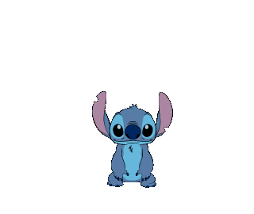
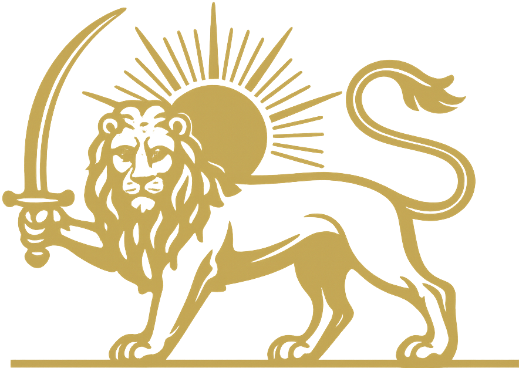

Change Cat
Zmień Kota
Text cat
Kot z tekstu
Bongo Cat
Kot Bongo
Disney's Stitch
Stitch Disneya
Nyan Cat
Kot Nyan
Persian Cat
Perski Kot
Invertocat
Polski
English
Projects
Projekty
To do list
Lista do zrobienia
Racism
Szowinizm
Dog Farm
Psia Farma
Emil
Pies
i
k
ot
ot
.
co
.
co
ⓘ
Hint
You can pet the dog, using your finger or cursor.
Wskazówka
Możesz pogłaskać psa, używając palca lub kursora.
Just cat made from text.
Po prostu kot zrobiony z tekstu.
Invertocat is GitHub's logo used here only as a social button to indicate that this project integrates with GitHub.
Invertocat jest logiem GitHuba użytym tutaj tylko jako przycisk społecznościowy informujący, że projekt jest zintegrowany z GitHubem.
Bongo Cat created by DitzyFlama.
Bongo Cat został stworzony przez DitzyFlama.
Stitch jest postacią z kreskówki „Lilo & Stitch” stworzonej przez Disney.
Stitch is a character from Disney's “Lilo & Stitch” cartoon.
Nyan Cat created by PRguitarman.
Nyan Cat został stworzony przez PRguitarmana.
The Persian Lion and Sun symbol is the emblem of free Iran.
Symbol Perskiego Lwa i Słońca to emblemat wolnego Iranu.
/ᐠ..ᐟ\

